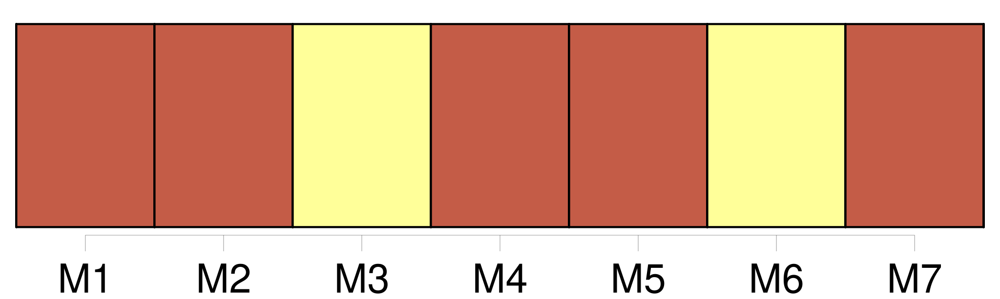

Longueur nb maillons : 10 mentions |
  |
[ article ] [1 phrases] En cas de souci, téléphoner à M. Arnould dépositaire de [l'Est Républicain] Tél 06. [8 phrases]
[ article ]
Si d'aventure [nos] lecteurs n'avaient pas leur journal dans leur boîte à lettres, ils peuvent contacter M. Arnould, dépositaire au 06 81 29 38 61 ou au 03 29 91 18 65. [44 phrases]
A sa famille, [l'Est Républicain] présente [ses] condoléances. [7 phrases]
En effet, Patrick et Marie-Odile, les dépositaires de [notre] journal ont accueilli leurs clients, revêtus de l'habit rouge du Père Noël, initiative saluée par tous. [248 phrases]
[Nous] avions rapporté dans [notre] édition du 29 décembre, comment un dépotoir s'était installé en pleine-ville, derrière un immeuble de la rue James-Long à Belfort, et combien cette vision peu ragoûtante perturbait depuis au moins deux ans les riverains. |
La ressource peut être téléchargée sur la page Ortolang
Si vous avez des questions ou vous voyez des erreurs, merci d'envoyer un mail à silvia.federzoni89@gmail.com
Site développé par S. Federzoni (contact)